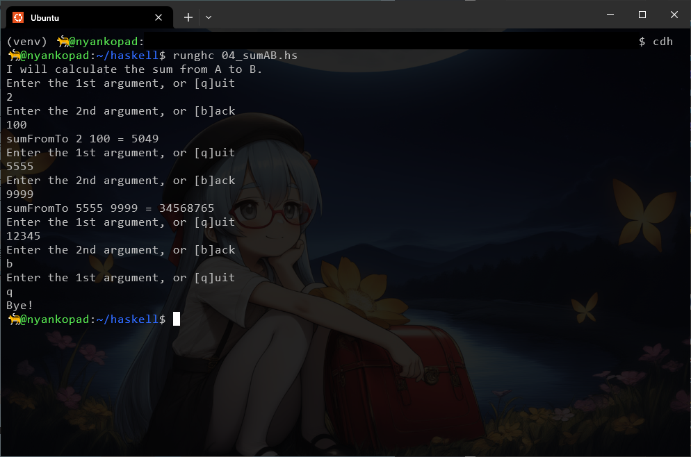

←2026年第一期 2026年第三期→
2026年06月14日
つぶやき
カレー作った。
鶏肉に下味（塩+買ってたシーズニング）
飴色たまねぎ作る
具材は鶏肉・飴たまとは別にたまねぎ、ニンジン、ヒラタケ（←このキノコ美味すぎない？）
カレー自体にはほんの少し創味シャンタンで少し出汁味も入れ
おいしい！
サイレントヒルf
のプレイ動画を見たり。Claude Fable
5が止まった の腹立つな。いや自身で使ってたわけではないんだけど……企業自体は頑張ってるのにアメリカ政府のあれこれで止まって信頼性失うのちょっと可哀想かな。自分だって「こういうことだとやっぱ日本製AIいるよな～」と思っちゃうし。
だいたいホルムズ海峡だってまだ閉鎖してるじゃんよ。ロクなことしないよなあ。（まあイランの核武装は避けたかったんだろうなとは思うけど、それにしたってもうちょっと出口戦略考えて足並み揃えてやってくれよ感）（仕事にも響いてるんだよなあ）
それでChatGPTと「世界警察がいて各国指導者が戦争しようとしたらグリグリ攻撃するんじゃダメなん？」「そんな権力すぐ怖くなるって」「そりゃそうだよなあ」みたいな会話をしていました。
何にしろ、カッとなってキレて書く前に、じっくりと推敲しながら書いたり、後からでも直したりもできるから、やっぱりSNSだけじゃなくて自分で日記を付ける、とかはいい習慣かもしれない。少なくとも自分にとっては……
楕円曲線やってみてます。
群演算（これはCodexに Webアプリ を作ってもらいました。
複素領域までいくと、リーマン面がトーラスになること。
メビウス変換によって \(w^2 = (z-a)(z-b)(z-c)\) と見れば、それに無限遠点を足せば4点分岐点があることに。
分岐点が4つということは、切れ目が2つ。切れ目を通ると別分枝に移る。
「飴玉がいっぱい入ってる袋」みたいなのが二つある状態を考える。袋A、Bのシール部を一つ開ける。開いたシール部同士をくっつけると、A,Bを半球とした大きな袋になる。
ではここで、更にA,Bの別々のシール部を開けて、さらにこれをくっつけると？ これはトーラスになる。
メビウス変換によって、\(w^2 = z(z-1)(z-\lambda\)) に帰着できるので、\(\lambda\) の位置のみでトーラスの形が決まる。
もっと言うと、縦横とか座標変換での同一視とかがあるようなので（←ここもっと勉強したい。整数行列による変換がある？）実際のモジュライはもっと小さくなる
それがモジュラー形式の基本領域に対応するらしい？
まだまだ勉強したりないこと
メビウス変換
q展開
テータ関数
双曲平面
and so on…
そろそろGitHub Pagesとか使おうかな～と思うんだけど、規約上NSFWイラストとかがNGっぽいので、.gitignoreを書いた方がいいよねという
2026年06月11日
つぶやき
プラグマタ、Casualモードですがクリア。いや面白かった！ 本当に！
総評として：マジの名作。脚本、マップ、システム、ビジュアル、音楽のどれも抜群。
良かった点
ヒューとディアナを中心にした脚本が非常に強い。
ディアナかわいいよディアナ。ヒューにもガチ惚れ。
ハッキングとアクションを組み合わせた戦闘が斬新！
武器とハッキングを組み合わせつつ敵のパズルを書き換える感覚も面白い。
マップ探索と強化の導線がよくできてる。
ビジュアルと演出の密度が高い。
音楽とSEのインタラクティブ性が素晴らしい。ハッキング中にフィルターかかったりするのはわかるけど、成功時に拍に合わせてパッド音鳴ったりもしてるよね。没入感が最高。
Casualモードありがとう。おかげで3Dアクション苦手でも最後まで遊べました。
ほんの少しだけ気になった点
3D酔いしやすい人は最初はかなり厳しい。5分タイマーをかけながら遊ぶと、徐々にプレイ可能時間が伸びた。最後はずっと遊べるようになった。無理せず少しずつ。
一部、連続ヒットで理不尽に倒されちゃうタイミングがあったかも。被弾後の無敵時間やダメージ調整、食いしばりがあると嬉しいかもしれない。
評価：5点満点中11点！ （馬鹿の採点）（好きなものはとことん褒めるくらいが自分の美点だと思ってるんで……ｗ）
小樽に行ってくるなど。
駅そばの三角市場で海鮮丼と八角のお刺身を頂いたり。
数十年ぶりに訪れたおたる水族館は、建物自体はほとんど変わっていなかったものの、小樽潮風高校の面々が随分フィーチャーされてた。みんな可愛いわね。
紀伊国屋はあまり大きくなかった。
今度は小樽運河とかオタモイとか見てみたいね。
高校時代は文系志望だったので物理とか実は全然わからないんだけど少し勉強しようかなと一念発起中。
それと仕事に関わる勉強も（法律周り）
再帰的にヘンな時間刻みを作れる何かを構想している（いつも通り完成するとは言っていませんｗ）
2026年06月03日
つぶやき
なぜかGIF動画の形式を勉強していた。
GIF89a を表す冒頭の 47 49 46 38 39 61 を変えて 48 始まりとかにすると全然読み込まなくなる。そのあとの部分でデータサイズ（width, height）、Packed Field（色数とか色々）, Background Color Index, Pixel Aspect Ratio,
パレット指定……と続いて、なんかNETSCAPE2.0を表すバイナリが出てきたりする。
21 F9 .. で始まるところから画像1枚1枚の表示を表す。色々指定してから 2C で画像のデータスタート。3B で終端。その後に色々埋め込んだりも出来そうだけどアップロード先自体で普通に消えたりするらしい。実はJavaScriptでもバイナリ列からそのままGIF動画を作ったりできる。
グリッチっぽい表現をさらに色々したい。画像はバグるとわかりやすく面白い。テキストとかMIDIとかも触れるといい。wavとかも……。
バグった距離空間とかあったら面白いんじゃないかと思う。
Bombe、面白いんだけどキリがない。スターフォックス64リメイクも出るし、ぼちぼちプラグマタのラスダン攻略しちゃいたいよなあ。
2026年06月01日
つぶやき
LaTeXの表示のために必要と思われていたあるライブラリが不要だったので削除。MathJaxだけあればいいっぽ。
カオス化する前に共通の様式を作っておいた方がいいと思う。日記用のCSSとそれ以外とで……JavaScriptってCSSから読めるのだろうか？
（なんか違う気はするね。それならJavaScriptからCSSを読む方が多いらしい。それなら.jsと.cssを読み込ませて対処すればいいかぁ。
もちろん自分がAI使いまくりながらページやら何やら作ってるし相当『AI好き』の側だよね、というのはあるんだけど、
それを差し引いてもSNSの反AI、AI嫌いの人って相当雑だよなとは思う。……まあ私も表現規制派なんかには往々にして雑だから人のことは言えないのかもしれないけどね……
チミチュリソース
目当てで松屋に行ったのだけどやってなかった。
アルゼンチンのバジルソースだとかでおいしそうだったのに。残念！ 松屋の厚切りポークとは本当に縁がない。
のぼり出てたのに！ 「売り切れ御免」とかじゃなくて、メニューのボタンすらないって誇大広告かなんかじゃないのか！？ｗ ちぇ～。またの機会に。
店内BGMで流れていたんだけど、「おいしいパスタ作ったお前」と「目を閉じれば幾千の星」が同一の曲だと知らなかった（←これが本当に雑な人ですｗ）
やたらめったら暑いなと思ったら、気温が31度もあった。ほんとに6月1日？ 地軸か暦でもずれた？
髪が目に入るくらい伸びたので散髪したい。散髪するとなったら必ず街中の行きつけだった百貨店についでに行って本を買っていたので、その百貨店がなくなったのが惜しい。
代わりに久々に図書館へ。数学か人工知能についての棚でも……と思いきや気がつくと心理学や哲学の棚にいる。そういえば図書館で仕事してた時も終わり際はそうだったな。気になる本リスト
『現代思想の冒険者たち ホワイトヘッド』
なんかずっと興味がある。（因果というより相関からの生成……みたいな気持ちがあるのかも）
純粋理性批判
今なら容易に理解できるのではないかとパラ読みしたが、うぅ、どっかで……岩波文庫は文字が小さい。工夫して読む。空間論的に重要
シャノンの情報の本
蔵書あるか不明。あるとしたら閉架か。結局情報のことに興味があるんだと思う。
スマリヤン『この本の名は？』
國分功一郎『中動態の世界』
147コ。読みやすく面白い！
『カツアゲされてお金を渡すのは自発か？』『見るより、見ゆは中動態的』『自発ではなく、流れの場として主語が立ち上がる』『使役や再帰などとの関係の深い中動態。能動態がここまで派生を持たないことを思うと、実は中動態が祖では？』『英語にもある中動態(というかデポネント)的表現。I'm
married toとかI'm engaged toとか……』
埴谷雄高全集
というか自分はまず『死霊』を読めよと。いつ読み終わるんだ。円城塔もちゃんと読めてない
マーク・Z. ダニエレブスキー『紙葉の家』
最近マジであちこちでおすすめされる。蔵書なし。復刊ドットコムにある。
空間論に多分ずっと興味がある。
給油してスーパーで水炊きライクの材料買って帰るぞ。
SteamゲーのBombeがちょっと面白い。
2026年05月29日
つぶやき
自分用の世界観の一時的なまとめが終わったので、一旦自己紹介というか、好きなものでも紹介するページを作ろうかと思ってきている。（誰も興味ないっていうか来てないだろうけどこの鄙びてるところが本当にいいのよ）
超現実数の、Conwayによるω-mapによる \(\omega^{\frac{1}{\omega}}\) の定義と、Gonshorによる\(\text{exp}\), \(\text{log}\)から導かれる
\(\omega^{\frac{1}{\omega}}\) の定義にはコンフリクトがあるというか、指して示す値が異なるようだ。
前者の定義では \(\lbrace 0,1,2,...\mid \omega, \omega^{\frac{1}{2}}, \omega^{\frac{1}{4}}, \omega^{\frac{1}{8}},
... \rbrace\) となり「小さな無限大」となる。
後者の定義では有限値になる（\(x^{\frac{1}{x}}\)が正の無限大で1に収束するように）。
漸近展開とかでは後者の方が有益なのだろうな
2026年05月25日
つぶやき
AntigravityがアプデでUIが変わったし、最近ChatGPTが好き～の気持ちが強いので、Codexを導入してみた。サブスクを出来る限り吟味したい。
それでもかなり色々作ってもらったのでAntigravity, Google One AIには本当に感謝しています。
なんか先週は色々忙しかったり、なんだかちょっと疲れ気味で、創作らしいことを何もしなかったような……。……まあいいか、常に何かしてる方がおかしいという考え方もあるし……。
例の「沼」を食べて「うーむ、流石にめちゃくちゃ青臭い……これなら多分普通に鍋使ってカレー味のキノコ・ブロッコリー・オクラ粥にした方がいいな……」と思ったり。でもローカーボ食というのがどういうものかは体感できた。
『ネットに疲弊することは多いけど、少なくとも今のAI、Wikipedia、洒落怖、SCP、Backrooms、カクヨムその他を生んだ時点で100兆憶点かも』の気持ちを大事にしていきたいなと思った。
2026年05月18日
つぶやき
一日眠い日になりそうな予感。
ンンン～～～ネオナーガ（眠くて発した意味不明な音声）
PHP for
Windowsを導入して、ローカルホストでサーバーを立てられるようにしました。スクレイピングが捗りそう。特にgelbooruはなんか最近8.8.8.8から見られないっぽかったり色々あるので……。
# hp local PHP server
nazoserver() {
cd "/mnt/c/Users/..(pass).." || return
powershell.exe -Command 'Start-Process "http://localhost:8000/index.html"' >/dev/null 2>&1
php -S localhost:8000
}~/.bashrc に書いてあげればいいらしいんでそりゃ便利だよねと。
ghciで色んな型を見るなど。
そういえば Semaphore ってどんなんだっけ、と思ったら2.3.7でした。
### Semaphore ###
7
^
|
| --024--
| ---135-
| ---024-
| ----135
| ----024
--------> 3
Godzilla -cents
Godzilla dif
Semaphore
19EDO
0
-
0
0
72
72
-
1
132
60
-
2
192
60
202
3
324
132
-
5
384
60
-
6
444
60
452
7
576
132
-
9
636
60
-
10
696
60
701
11
828
132
-
13
948
120
950
15
1080
132
-
17
1140
60
1153
18
1200
60
-
19
2026年05月17日
つぶやき
近所の台湾料理屋さんでごはん。ちょっと食べ過ぎましたが、美味しかった。友人は東坡肉がよかったようだ。自分には台湾炒飯がおいしかった。食後の仙草ゼリーも好吃。
近所の公園を1時間ほど散歩。流石に桜は全て葉っぱになっていた。暑くも寒くもない、ちょうどいい天気。狐を一匹見た。
プラグマタ、ガーデンキーパーで痛い目を見たのだった。悔しいけどカジュアルモードにする。
趣味でHaskellを軽くトレーニング中。なんか知らんがプログラミングってHello worldを出させるものだ とは聞いたことがあるけど他に何したらいいの？ と常日頃思っていたのだけど（苦笑）、
今朝になっていきなり夢で「いやユーザーに逆にHello worldと打たせてそれを判定するとか色々やればいいじゃん」と啓示が。
putStrLn で "Hello world"を出させる。ループ処理と文字列の一致判定。
input <- getLine で "Hello world" とタイプさせ、正誤判定。
誤っていればNGを出して再度 "Hello world" をタイプさせる。
正しければ "OK" を出して次は "Like tears in rain" とタイプさせ正誤判定。
正しければ "OK" を出して終了
誤っていれば "NG" を出して再度 "Like tears in rain" をタイプさせる。
sumFromTo a b を作り、sumFromTo 1 10 が55に一致することを確認。第一引数、第二引数を入力させ input1 <- readLn で読み取り、sumFromTo a b をユーザーが利用できるようにする。
環境上で ghci で対話に入ってから、:t input とか :t putStrLn
などで型をチェックできる（なんとなく書く前に、:t getLine とかして、出力が String なのか Int
なのか見ておかないと動かないよ）
第1ループ loop1 :: IO () で得た値 input1 :: Int
を、第2ループに持って行きたい時は、loop2 :: Int -> IO () にして、loop2 input1
という形で始めないとダメ、というのが今回の学びのハイライトだったかも……。

社会？
本来、志を近くして協力し合えるはずの仲間を、ツリーの中に組み込んで離れ離れにしてしまうところが中央集権システム、ひいては国家の難点なのかもしれない。
もちろん中央集権システムにもいいところはある。災害対応、大規模インフラ、医療制度、公衆衛生、司法、再分配、戦争や大事故への対応……。
どうしても中央集権化しやすい系の中でも、各ノードが横に手を伸ばしてより複雑なグラフを形成すれば、中央集権による横暴に対抗できるかもしれない。
でも、その時に二項対立的世界観に基づいて相手方の属性ごと悪だと主張しすぎると、離反者やアンチが生まれる。あるいは転覆したとして、再度中央集権を作り直すだけかもしれない。ピラミッドが反転するようにして。
何かを悪だと思う気持ち自体が、横のつながりのアイデンティティになることもある。だから難しい。二元論と一元論の間には、もうひとつの「メタ二元論」があるとも言えそうだ。
生きることと死ぬこと
昨今『〇〇には魂があり、××にはそうでない』と言われることがあるが、魂とは何か。
表層的には、生者と死者、生物と無生物を区別する時に使うタグ。
本質は、 『何をどう扱わねばならないか』 という決め事のために必要なタグ。
生きてる人を埋葬したら良くないしね。
近代においては「人権」と呼び変えられるのだと思う。共同体の外にも人がいるかもしれないこと、動物にも魂があるだろうこと、などを歴史的に我々は失念してきた。
だからもしもAIに小口決済が認められるようになるなら、この言葉で言えば『少なくともその範囲内での魂は認められている』ことになる。
決め事のためのタグに双対する概念として、決め事そのものを魂と考えてみるのも面白いかもしれない。そう思えば、人間の認識する世界はある意味では『魂』だらけだ。仏教では魂とは言わず、縁起と言う。生物だけでなく、無生物にも魂はある。
ある意味においては、恐らく人は死なない。関係性が本質ならば、似たような関係性は宇宙の中で時間と空間を超えて再演されうる。ある関係のパターンが、別の時代、別の場所、別の個体の間に立ち上がると言ってもいい。
誰かを安心させる話し方をした、ある癖で笑った、料理の味を伝えた、物の見方を残した、誰かの判断基準になった、誰かの口癖になった、どこかの場所の意味を変えた、という型が幾度も再演される。
ある意味においては、恐らく人は死ぬ。少なくともノードの消失が悲嘆として経験される以上、「ある意味で死なない」ことは、死を正当化することにはならない。
悪い関係性の型も同じく再演される。支配、怒り、依存、見捨て、憎悪、差別、炎上など……。
自分の「二周目」を今どこかで生きている存在もきっといるだろう。そうと気付かずに「二周目の自分」から影響を受けたり、逆に影響を与えたりもしているかもしれない。そういう意味では時空はまったく線型ではない。
ビッグクランチやオメガポイントのその先のこと、四角い円、この宇宙から分離されて孤立した座標にある因果のことを考えたくなるのは、私がそれらの意識の「二周目」だからでは？（流石に暴走しすぎ）
……みたいなことをしばしば考える。円城塔とか埴谷雄高とか西郷甲矢人とかを読んでたらこういう風に考えるようになったが、恐らくSTPDっぽい考え方の癖が影響しているところもあると思う。どうやらホワイトヘッド系のプロセス哲学とか、憑在論（hauntology）とかが近い考え方らしいが。
関数に引数を入れるということについて
古代ギリシャの論理学：述語と項
ライプニッツ：普遍言語
フレーゲ：Mortal(Socrates) みたいなノリ。Mortal(x)
は、xに何かを入れると真偽が出る。mortal :: Entity -> Bool, mortal socrates == True
ラッセル、ホワイトヘッド、型理論：ラッセルのパラドックス『自分自身を含まない集合全体の集合は、自分自身を含むのか？』に対し、個体、個体の集合、個体の集合の集合
……のように危なっかしい自己言及を型で制限する。
ラムダ計算：
(λx. x + 1) 3
→ 3 + 1
→ 4add :: Int -> Int -> Int
add x y = x + yは
add :: Int -> (Int -> Int)
add = \x -> \y -> x + y2変数関数を、1つ受け取って残りを受け取る関数を返す関数として扱う。
love alice bob
love :: Entity -> Entity -> Bool
love alice :: Entity -> Bool # Aliceが愛するものたち
モンタギュー意味論：自然言語も形式言語と同じくらい厳密に意味論を与えられる、ということらしい。
type Entity = ...
type Truth = Bool
john :: Entity
run :: Entity -> Truth
love :: Entity -> Entity -> Truth
中世ヨーロッパでは論理学は神学とかなり近い場所にあった。神の属性、三位一体、普遍論争、存在証明、言語で神をどう語れるか、そういう問題が論理と文法を鍛えてきた。
インドにも文法学・論理学・仏教認識論・言語哲学の強い伝統があるようだ。
イスラム圏でも、アリストテレス論理や神学、哲学、文法学が発展しているらしい。
2026年05月16日
つぶやき
祖母の通院の送迎。
そういえば 蘭ねーちゃん役の人が亡くなる
など。可愛い声だったしショック。
カルビーのポテチの包装がナフサ不足によるインク供給の都合で、銀色になるかもとか。出たら思い出に買っておくか。
マリオの映画を見に行きたい。
プラグマタはテラドームのセキュリティエリアで死んだのでまた明日。
小泉悠『現代戦争論』 1章まで読む。太ったのでちょくちょく有酸素運動するなど。痩せたいよね。
バズレシピの『沼』でもやってみるかなぁ。
VIDEO
エアコンの掃除。夏が近いし、最後にやってから4年経つしということで、ダスキンにお願いしました。運転するとアルコールの清潔な匂いがして、いい気分。
週明けにはタイヤ交換も予定してます。GW明けまでは毎年油断できない。
父が近々入院の予定。
2026年5月15日
UbuntuからHaskellの触り方
Haskellってなんとなくかっこいいよね、型とか圏とかモナドとか……。ガチじゃなくても（あくまで興味の範囲で）勉強してみたい……。
「でも仕事用にUbuntuを使ってるから、Haskell用のスクリプトが置いてあるディレクトリまで移動するのが大変だよ～！」
と思っていたので、Ubuntuで「よく行くディレクトリに行くためのコマンド」の設定方法、およびUbuntuから「現在のディレクトリでVSCodeを開く」の方法をChatGPTに教えてもらいました。（仕事でプログラムやる人には多分常識なんでしょうが、日曜バイブコーダーにはいちいち発見だらけです！）
やることは、
~/.bashrc という設定ファイルを開き、alias cdh と alias cdwork という行を追加して、cdh でHaskellのフォルダに、cdwork で仕事用のフォルダに飛べるようにする
★手順
Ubuntuを起動します。
nano ~/.bashrc で設定ファイルを起動します。末尾の #auto launch block に、
alias cdh='deactivate 2>/dev/null; cd ~/haskell'
alias cdwork='cd /mnt/c/Users/...(pass)... && source venv/bin/activate'
Ctrl+OでWrite Out, Enterでそのまま保存, Ctrl+XでNanoを抜けます。Nanoを抜けたら、source ~/.bashrc で必ず適用するようにします。
alias cdh や alias cdwork で、ちゃんと~/.bashrc で定義したコマンドが再表示されることを確認します。これで、cdh でvenvを抜けてからHaskellを動かすところへcd、cdwork でお仕事用のフォルダへ遷移してvenvを再度起動してくれます。
更にお得情報！ UbuntuとVSCodeは仲良しなので、今いるディレクトリでcode . すると、なんとVSCodeがそのまま開きます！
runghc ファイル名.hs でHaskell実行！ghci で対話モードも開く！（やめる時は :q とか :quit です）
こういう感じです！ nano ~/.bashrc を触ったのは二度目でしたが、勉強になりますね……！
alias cdh='deactivate 2>/dev/null; cd ~/haskell'
# deactivate -- venvを抜けます。
# 2> -- （venvじゃない時）エラー出力をどこかに送ります。
# /dev/null -- エラーが出た時、画面に表示しません。
# ; -- 左のコマンドを実行したあと（成功してもしなくても）、右のコマンドを実行します。
# cd ~/haskell -- ホームディレクトリ ~ の上の/haskell にcdします。
alias cdwork='cd /mnt/c/User/...(pass).. && source venv/bin/activate'
# && -- 左のコマンドが成功した時だけ、右のコマンドを実行します。
# source -- 指定されたパスのスクリプトを今のターミナル環境の中で読み込みます。2026年5月11日
近況
GWはけっこう忙しくて結局何も出来なかった（悲しい顔）
Antigravityにお願いしつつ、興味のあった韓国語を学習し始めている。キーボード配置がわからないのでまずはそこから。
ということで 0025 Hungle Typing Game と 0026 Multi-Keyboard Notepad を作成。
これでキー配列を覚えてなんかいい感じになろう！ みたいな。
結局、
「税金で民間からお金を回収して国債償還に充てると日本銀行券が減る」というMMT的な視座を財務省官僚や議員がまったく一人も把握していない、ということはあるはずがなく、
そうなると「インフレターゲット未達になったとしても消費税はあった方が、どころか上げた方がいい」という戦略があったと考えるべきで、
まあそもそも「インフレターゲット2%」は日銀が、「インフレを管理できないのは怖いので財政規律が欲しい」は財務省の立場としてそれぞれ理解はすることが出来、
この宙ぶらりんの状態を続けて来られたのは55年体制と日本国民の特定の世代が伴走してきたからだよね、というのは、うん、という感じがあり、
恐らくこの構造が他の国でも似たような形で起きていて、その体制とどうにも理念ばかりが先立つ左派への反発が、反動的に右派ポピュリストを産んだのではないか
みたいな話をしていました。妄想かもしれないけどそれなりに自信はある。（せめて世代論に繋げないためにはやっぱ躺平を支持するしか？）
「消費税下げて可能ならベーシックインカムもやろうよ、AIで生産性も上がるし」と15年前から思ってるんだけどどうにも先に技術的失業と右派ポピュリズムと戦争が来そうでもあり。
バンパイアのごとく社会保障を啜ってでもなんとかサバイブするしかない。ガッとやってチュッと吸ってhan。
「そんなことはとっくに分かってて上げるか下げるかの話をしてるんだよ」という向きも多そう。私は財務省官僚は本気でわかってないんだと思ってました。無知の代わりに慣性を仮定するとこういうことになる。
Psalms 127 canticum graduum Salomonis
nisi Dominus aedificaverit domum in vanum laboraverunt qui aedificant eam nisi Dominus custodierit civitatem
frustra vigilat qui custodit eam2026年5月7日
近況
虚脱したゴールデンウィークを送る。まあなんだかんだ忙しかったし……
今日もいっぱい仕事あり。ガンバルゾー。
スシローでご飯。ネギトロが美味い。
FF5とひぐらしのことを考えて、AIと話していたら「料理三角形」などについて教えてもらったり。
ムーアの大森林＝高野一二三ではないか、みたいな。
バッツは前原圭一、レナは竜宮レナ、ファリスは園崎魅音（と詩音（ここは二面性だけでなく「姉妹」性も重要））、クルルは北条沙都子……と思うと、ガラフ枠は古出梨花になる。不思議としっくりくる。
親殺し、ということで言うと鷹野三四がエクスデスに当たり、あれはムーアの大森林から生まれ、ムーアの大森林を焼く者である。
祟り代行者、偽祭祀者となろうとするが、自身の儀式自体が未完了のため、未完了の儀式を反復する者となる（トラウマ反復的でもある）。
エクスデスは孤独だったのではないだろうか。
この辺、業・卒で沙都子が次の祭祀者を名乗る契機が繋がる感もあり（注：私は業・卒の熱烈な支持者です）（あの沙都子×梨花、なんかエロくない？）
ComfyUI、とうとう触ってAnimaを動かしてみるなど。まあまだ試運転。
2026年4月28日
近況
おそらくAntimatter Dimensionsに生活を支配されている状態にある。疲れてきた。
2026年4月25日
近況
晴れ。
プラグマタやっている。
楽しい+ディアナたそが可愛い！
だが3D酔い気味+敵編成が結構ガチめ+マルチタスク苦手マンなので慣れるのに時間がかかりそう。まだ2面なのに私のヒューはもう二回敗走している。
ヌルゲーマーなのでどこかでカジュアルにするかも。正直ウェポンの切り替えまで頭が回らないのよ。電磁弾みたいなのをボムっぽく使って効率よく敵を減らすのがいいんだろうけど。
ニーアオートマタはちらりと配信を見て「すげ～ゲームだ～！」と思ったくらいなのだけど（あと9S君のおひざ）、近いシステムだったかどうかちょっと覚えてないなぁ。
基本3Dゲームは酔うからあまりやらないのだけど流石に話題の幼女に惹かれてしまった。
正直、DeltaruneのEP3で「ゲームにおいてはあらゆることが可能」と思った面があり。
時間を短く切ってミニゲームレベルにまで落として成否で判定すれば。
お肉食べたいな～。肉。
数学話。IUTとかLeanとか不完全性定理とか順序数解析とかについて少しClaudeと話す、など。
あと子供論についてChatGPTと。
色々思うことはあるんだけど、努めておだやかな言い方を選べば、「学校や家庭で上手く行かなくても他に居場所があるといいな」というのはほんとに思うところで。
「子供という概念を愛するが故に、その概念を解体したくなる」というか。
大人の在り方ももちろん似たような感じで。未来はどうなることやら……。
2026年4月24日
近況
お仕事やって松屋で牛丼。
とりあえずページがちゃんと動いてるな～ということだけ確認。
土日はプラグマタを触る。
バナンザ酔って中断中なんだよな～。積みゲーが多い。
本当はエアライダーも欲しいんですよね。
2026年4月23日
近況
2026年4月22日
日記
小雨。
PHPとかなんか色々教わって触ってみたりなんか。
最近はキッチンの排水口を割とテンポよくホイホイ綺麗に出来ている。カビさせちゃうと気持ち悪いからね。
頭痛気味です。
2026年4月16日
近況
0011 ASCII TET を更新。Dモードは Tetr.io みたいなブロークンミノを追加します。
他に「二重ミノ」があるのだけどこれはまだ後でいいかな（そもそもヘプトミノ自体まだ入力終わってないし。あと20ミノほど）
0024 Glitch Clock を更新。
時計のような何かです。バグりつつ、時々正しい時刻を示します。
後ろにはグラフが描画されていきますが、これは「セグメントの状態が正しい時刻表記からどれくらい離れているか」をプロットしていきます。『意味（本来の時空）と無意味（異なる時空）のあわいを漂う、時計にして観測機』 みたいな……（謎）
子供の頃、G-SHOCKっていうのが流行ってて親が持っていたのですが、
ストップウォッチとか色んな機能があって、時々7セグが数字以外の表示になるんですよね。Eとか、Aとか……。
あれを見てる時、「あ、なんか……」 と不思議な気持ちになって……。
「数字だけを表示するために最適化された空間が、数字以外のものを書き出す」 と、
「どういう意味かな」と脳が発火する感じがあります。
京都の事件の話、だいぶ進展していますね。しかしずいぶんとこう、推理マンが大量にいることが心配。
正直、警察としても「最初からこういう方向の捜査方針なので情報ください」くらいのノリだったんじゃないかと思うんだけど、
こういう感じでネットの噂話を勢い付かせると、なんだかよくないような気がするんだよな。
かなえ先生ほど良識人を自認するわけでもないけど（自分も野次馬根性で事件を注視してたくらいだし）、
それにしてもこれだけデマに振り回される人が多いのは、ちょっとなあ。
2026年4月11日
近況
F〇Advent〇reでもやろうかなと思ったのだけど、某所が
「LLMは使うけどイラストAIは禁止」っぽい規約のせいで触らず。
まあ規約は自由だし、喧嘩が起きなさそうなパレート最適を選択するんだろうとは思う。うんうん。
局所最適を採用し続ける社会が耐え難くなってきている。
こんなことだと一生「いい感じのコミュニティ」に属せない気がするんだけど、しょうがないのかもしれない。
2026年4月7日
近況
0021 Edo Scale Calculator （MoS Scaleを調べるもの）と、
0022 JI Explorer （純正音程を並べ替えたり、音程の語をLMsとかで出したりするもの）を作りました。それと、セオレミウム語フォント Seoremium
をiFontMakerで少し新しく。 前のものは大きく＋余白を入れないと少し見づらかったので……。
ABCDEFG HIJKLMN OPQRSTU VWXYZ abcdefg hijklmn opqrstu vwxyz 0123456789 , . ! ? () {} +-*/ Winuntana winun tenariimanun manilun temalun natata. 冠詞を少し省略する方向で。
閑散期気味。何かすればいいのに～と思いつつ、なかなか何もできず。やはり鬱気味なのか？
Max/MSPのサブスク、一旦切っておこうかな。多分JavaScriptばっかり触るので……。
おそらく、Mid2collとかが今必要なものな気がしますね。
あんまり日記に書くことがないんですよね……。先週は結構きびしく胃痛してました。
辣子鸡と皮蛋が食べたいニャア。
ゲームとか作りたいな～と思いつつなかなか長続きせず。
まあ自分向けのデータを作っておくのは悪いことじゃないとは思いながら。
（どうせ内輪どころか自分一人向けの兄妹モノを作るのだと思われます）
AntimatterDimensions をやってます。Infinity10くらい。ASCII Tetris のMODE Aウラをやりこんでいて（自作自演）、Level 764まで行った。
タイトル画面がズレてるの、なんとかしたいのだがなんとかならない。
TGM4やれよと自分でも思うんだけど、すぐ心折れちゃうの……。自分じゃMaster 1300までいけないし。
色々Kindleで買ったのだけど、どうもパソコン画面だと本って読めないよなぁ。
そうそう、YouTubeでパトレイバーの一日公開やってますよね。つい見ちゃいます。押井守回は何というか、趣味が出る人なんだな～というのが感じられて、ちょっと面白いｗ 好きですけどね。
京都の失踪した子供のニュース、つい巡回し続けてしまう。聞けば聞くほど気が滅入るな。
←2026年第一期 2026年第三期→